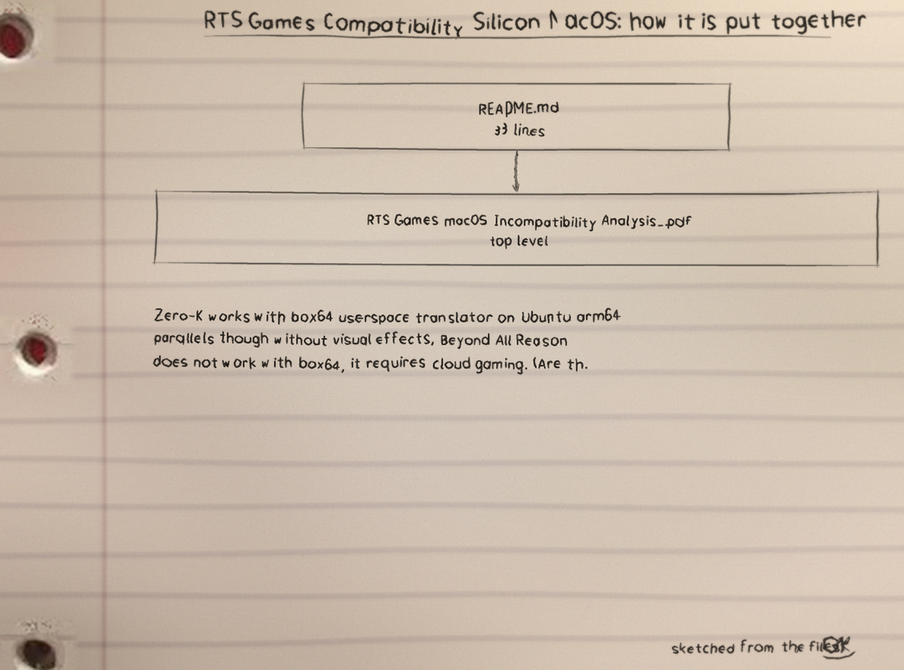
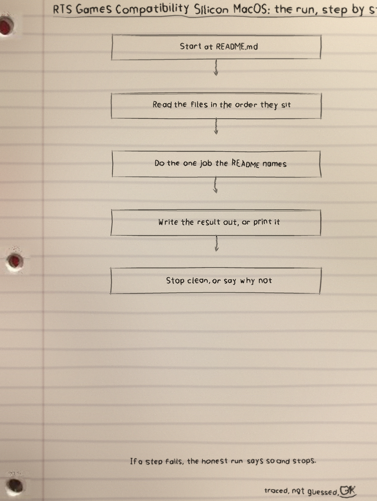
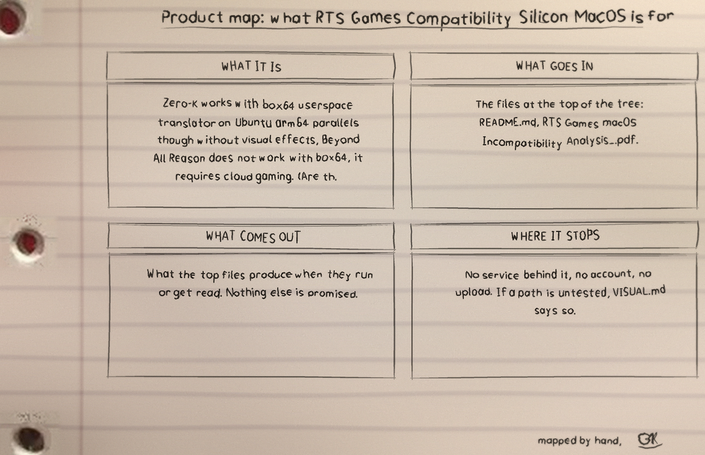

Zero-K works with box64 userspace translator on Ubuntu arm64 parallels though without visual effects, Beyond All Reason does not work with box64, it requires cloud gaming. (Are these games worth playing if they are so hard to get installed, are there better alternatives?) https://www.applegamingwiki
What it is
RTS Games Compatibility Silicon MacOS: 2 files, 33 counted lines across Markdown 33. One job, done in the open, in files you can read.
The biggest piece
README.md carries the most
lines. If the project grows, that file is where the growth
lands first, for better or worse.
The honest gap
No test files yet. That is the honest gap, and the roadmap in the visuals folder says what the first one should cover.
Run it
The repo README has the exact commands for this one. The shape is the shape for most of my projects: clone it, read the top file first so you know what will happen, then run it on something you do not mind breaking.
$ git clone https://github.com/Epsilon0xCell/RTS-Games-Compatibility-Silicon-MacOS.git
$ cd RTS-Games-Compatibility-Silicon-MacOS
The code, as it sits in the repo
From README.md, line 1 on. I did
not tidy it for the page. What you see is what the file has.
Zero-K works with box64 userspace translator on Ubuntu arm64 parallels though without visual effects, Beyond All Reason does not work with box64, it requires cloud gaming. (Are these games worth playing if they are so hard to get installed, are there better alternatives?)
```
https://www.applegamingwiki.com/wiki/Home
```
```
Warzone 2100k works great (Native Mac Port)
OpenRA works great (Native Mac Port)
```
```
Hardware always trumps optimized Linux OS on x86_64 like catchyOS and Garuda Linux
```
I prefer playing Halo wars DE and Halo wars 2 on Xbox
and Age of Empires IV works on Xbox
(All these RTS games are on gamepass)
Red Alert 3 Works Great on Parallels. (Maybe even works on Crossover)The files that matter
| File | Lines |
|---|---|
README.md | 33 |
RTS Games macOS Incompatibility Analysis_.pdf | 0 |
Names doing the work: no named functions in the snapshot.
Drawn by hand
I sketch my projects on notebook paper so I have to understand them well enough to draw them. The full set, with the counts and how they were counted, is the RTS-Games-Compatibility-Silicon-MacOS-Visuals folder in the repo. Nothing is drawn over the binder holes. That is a rule, not a style.


